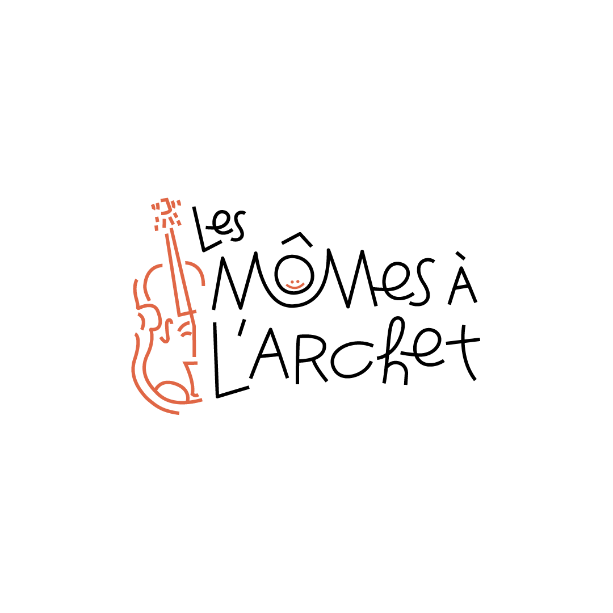
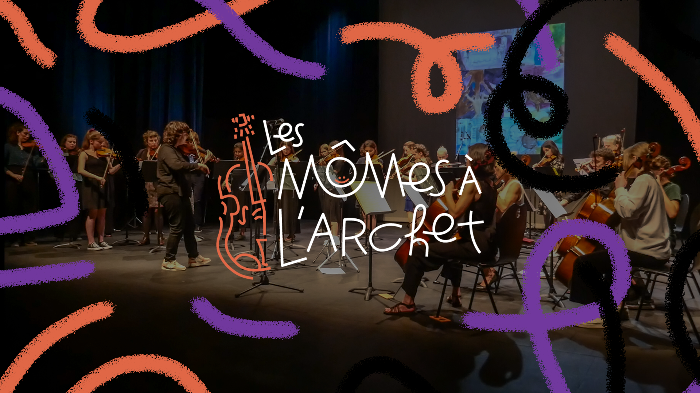

Les Mômes à l'Archet


Client : Les Mômes à l'Archet | Année : 2026
Les Mômes à l’Archet est une association musicale spécialisée dans les instruments à cordes et dédiée à la transmission et à la pratique de la musique. Avant ce projet, elle ne disposait pas d’identité visuelle claire, ce qui limitait sa visibilité et la cohérence de sa communication auprès de ses membres et du public.
L’objectif était de créer une identité visuelle complète et cohérente, capable de refléter l’univers musical et collectif de l’association. Le projet devait permettre à l’association de se présenter de manière reconnaissable, moderne et harmonieuse, tout en traduisant l’esprit artistique et collaboratif de ses musiciens.
Le studio Sens a pris en charge la création de la charte graphique dans son intégralité : conception du logo, choix de la typographie, palette de couleurs, textures et éléments graphiques. Chaque élément a été pensé pour être à la fois distinctif, esthétique et fonctionnel, afin de donner à l’association une identité visuelle forte et facilement déclinable sur tous ses supports.
L’objectif était de créer une identité visuelle complète et cohérente, capable de refléter l’univers musical et collectif de l’association. Le projet devait permettre à l’association de se présenter de manière reconnaissable, moderne et harmonieuse, tout en traduisant l’esprit artistique et collaboratif de ses musiciens.
Le studio Sens a pris en charge la création de la charte graphique dans son intégralité : conception du logo, choix de la typographie, palette de couleurs, textures et éléments graphiques. Chaque élément a été pensé pour être à la fois distinctif, esthétique et fonctionnel, afin de donner à l’association une identité visuelle forte et facilement déclinable sur tous ses supports.